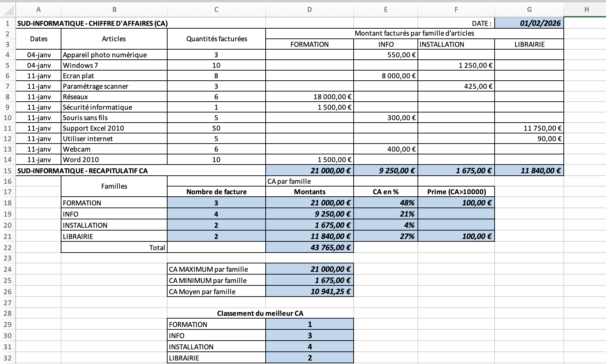
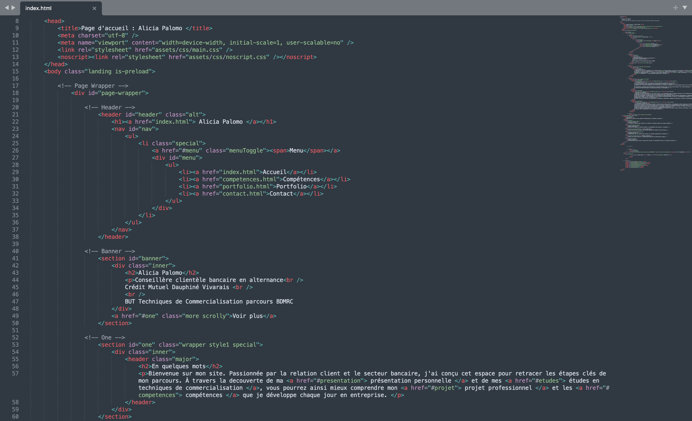
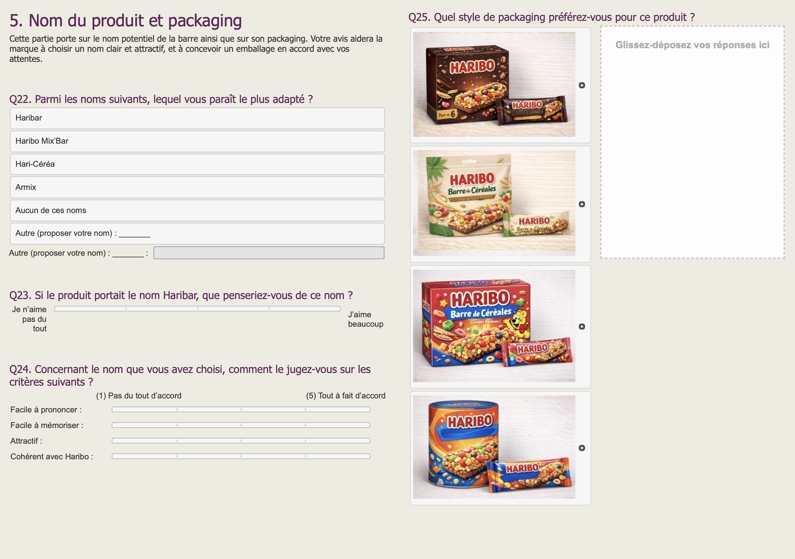
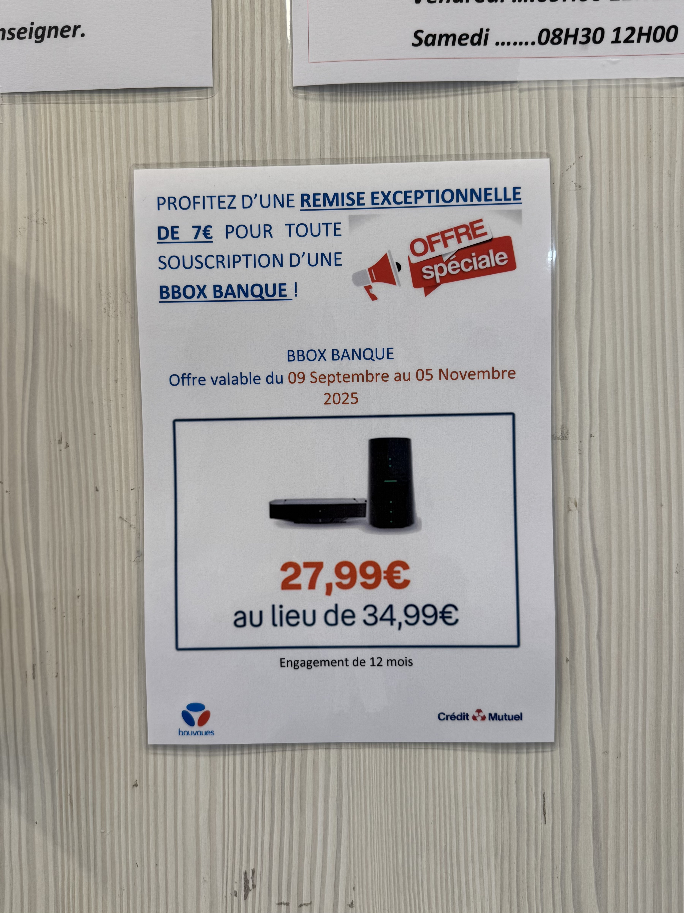
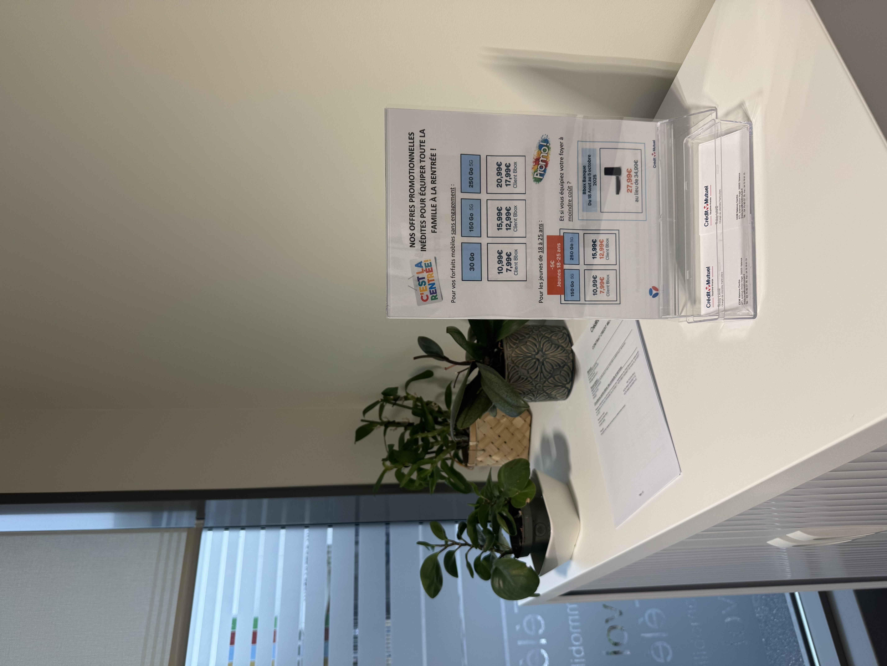

Galerie de Projets
Découvrez mes réalisations académiques et professionnelles
Sommaire
Analyse de données - Excel

Conception d'un tableau de bord de suivi du Chiffre d'Affaires pour l'entreprise "SUD-INFORMATIQUE". Ce projet démontre ma capacité à automatiser des calculs complexes :
- Analyse de données par familles d'articles.
- Utilisation de fonctions logiques (SI) pour le calcul de primes.
- Calculs statistiques (Moyenne, Max, Min) et classement automatique des performances.
- Répartition du CA en pourcentage pour une lecture stratégique rapide.
Création Graphique - Canva
Plaquette Commerciale - Calipage
Vue Recto
Vue Verso
- Objectif : Valoriser l'identité de l'entreprise et le produit phare (Clairefontaine Fashion 2024).
- Design : Respect de la charte graphique (rose/blanc), structure logique avec chiffres clés et QR code.
- Stratégie : Absence de prix pour garantir la pérennité du support.
Affiche Produit - Yuzaké
Visuel publicitaire premium
- Univers : Style épuré d'inspiration japonaise (Yuzu, sushis, raffinement) qui font référence au produit.
- Identité : Palette de couleurs vives (orange, vert, jaune) évoquant la fraîcheur du produit.
- Positionnement : Signature "Brassée avec passion, inspirée du Japon" pour l'aspect artisanal.
Retouche Photo & Graphisme - GIMP
Création d'effets visuels
Effet miroir sur paysage : Travail sur la symétrie et la déformation de l'image pour créer un reflet aquatique réaliste.
- Utilisation des filtres de distorsion et de flou cinétique.
- Gestion de la colorimétrie pour harmoniser le reflet avec le ciel.
Packaging & Habillage Produit
Conception d'étiquette : Création d'un visuel publicitaire pour une bouteille de bière artisanale.
- Détourage précis du support (la bouteille).
- Incrustation de logos, de textes stylisés et gestion des calques de fusion pour adapter l'étiquette à la forme du verre.
Projet Web (HTML5 / CSS3)

Interface de mon site
Programmation sous Sublime Text :
- Langages utilisés : HTML5 pour la structure et CSS3 pour la mise en forme.
- Compétences techniques : Modification de feuilles de style (CSS), gestion du Responsive Design (adaptation mobile/tablette) et structuration sémantique du contenu.
- Objectif : Centraliser mes compétences et projets de manière interactive et dynamique pour les recruteurs.
Étude de Marché - Projet "Haribar"

Extrait du questionnaire réalisé sur Sphinx
Pour ce projet, j'ai utilisé le logiciel Sphinx afin de créer un questionnaire complet et analyser les retours des consommateurs sur une nouvelle barre de céréales Haribo.
Construction du questionnaire
- Organisation : Utilisation de la logique du "sablier" pour accompagner le répondant sans le lasser.
- Types de questions : Mise en place d'échelles de notation et de visuels pour obtenir des réponses précises sur le goût, le nom "Haribar" et le packaging.
- Ciblage : Tri des répondants pour ne garder que les personnes entre 18 et 55 ans et éviter de fausser les résultats.
2. Analyse Statistique & Marketing
- Tris à plat : Identification des freins majeurs et des leviers.
- Tris croisés (Analyse de données) : Utilisation des tests de Chi-deux (p-value) pour segmenter la cible.
Alternance : Communication Commerciale - Crédit Mutuel
Création de PLV (Publicité sur Lieu de Vente)

Offre Bbox banque (-7€)

Offre Mobile Rentrée
Lors de mon alternance, je réalise des supports de communication pour dynamiser les offres du moment (Bbox et Forfaits Mobiles).
- Conception : Création sous Word avec intégration d'images libres de droits pour un rendu professionnel.
- Stratégie de visibilité : Placement des supports sur les comptoirs d'accueil, entre les automates de retrait et en "sous-main" dans les bureaux.
- Objectifs : Capter l'attention du client et faciliter le rebond commercial par les conseillers.
- Impact : Utilisation de dates limites pour créer une urgence temporelle et inciter à la souscription immédiate.
Centres d'intérêt
Running & Bien-être

Parc de Lorient : Pratique régulière de la course à pied (sessions de 7 km). Cela me permet de rester active et de me ressourcer en pleine nature.
Randonnée & Challenge
Lac de Monteynard : Réalisation de la randonnée des passerelles himalayennes. Un parcours d'environ 12,5 km qui demande de l'endurance et offre un dépassement de soi face au vide et au dénivelé.